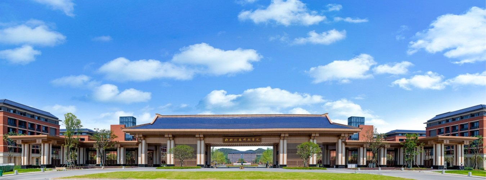

桂林信息科技学院创建于 2001 年，前身为桂林电子工业学院信息科技学院，2006 年更名为桂林电子科技大学信息科技学院，2021 年 5 月经教育部批准转设为独立设置的民办普通本科高校，更名为“桂林信息科技学院”。
学校坐落在山水甲天下的历史文化名城桂林市临桂区。校园占地总面积 1331 亩，校舍建筑总面积 58.72 万平方米。校园环境优美宜人，建筑文化底蕴浓厚，呈山水与人文相交融、建筑与自然相得宜、书香与智慧相结合的校园特色。校内教学楼、图书馆、学生宿舍、体育馆及食堂均配备冷暖空调，为师生员工提供了舒适的学习和生活环境。
学校赓续桂林电子科技大学的学科专业优势，历经 20 余年的栉风沐雨、薪火相传，现已发展成为一所以工为主，电子信息类学科专业特色突出，工学、管理学、艺术学等多学科协调发展的地方性、应用型民办大学。学校秉持“以终为始、以生为本”的办学理念，立足桂林，服务广西，融入粤港澳大湾区，辐射全国，培养德智体美劳全面发展的高素质应用型人才。
学校创新创业成果、人才培养案例被中国教育电视台、新华网、央广网、《中国教育报》等报道。先后获“全国品牌影响力民办高校”“自治区文明校园”及“平安校园”等称号，2025 年跻身艾瑞深校友会民办大学排名全国第 76 位，入选三星级中国高水平应用型大学行列。
学校现有专任教师 1330 余人，自有教师中硕士及以上学历占 84.68%，具有高级专业技术职务占 24.48%。学校下设信息工程学院、电子工程学院、机电工程学院、商学院、创意设计学院、通识教育学院和马克思主义学院等 7 个二级教学单位，开办 43 个本科专业，涵盖工、管、文、理、经济、艺术、教育 7 大学科门类，全日制在校生 2.2 万余人。
（以上内容整理自学校官网“学校简介”，数据统计到 2026 年 6 月。）
以终为始 · 以生为本
建设电子信息特色鲜明的高水平应用型大学
培养具有家国情怀、社会责任感、创新精神与实践能力的高素质应用型人才。
英文名：Guilin Institute of Information Technology（GIIT）
校址：广西桂林市临桂区岩图路 9 号
校训精神：自强 力行 求实 创新
前身为桂林电子工业学院信息科技学院，开启信息科技人才培养之路。
经教育部下文确认为独立学院。
依托桂林电子科技大学学科专业优势持续发展。
经教育部批准转设为独立设置的民办普通本科高校，学校发展进入新阶段。
临桂区新校区正式落成，办学条件与校园环境全面升级。
同年跻身艾瑞深校友会民办大学排名全国第 76 位，入选三星级中国高水平应用型大学行列。
学校以“面向未来、服务产业、技术引领、能力导向、持续发展”为培养方向，深化创新创业教育改革，构建“课—创—赛”双创教育体系。
围绕高素质应用型人才培养目标，构建课程、实践与产业协同的培养体系，让每位学生都有清晰的成长路径。
课程学习、创新创业训练与学科竞赛贯通，学生近三学年在各类学术科技竞赛中获国家级奖项 428 项、自治区级奖项 2010 项。
深入实施“3+1”“2.5+0.5+1”校企协同育人模式，与中兴通讯、亿纬锂能等知名企业共建现代产业学院 11 个。